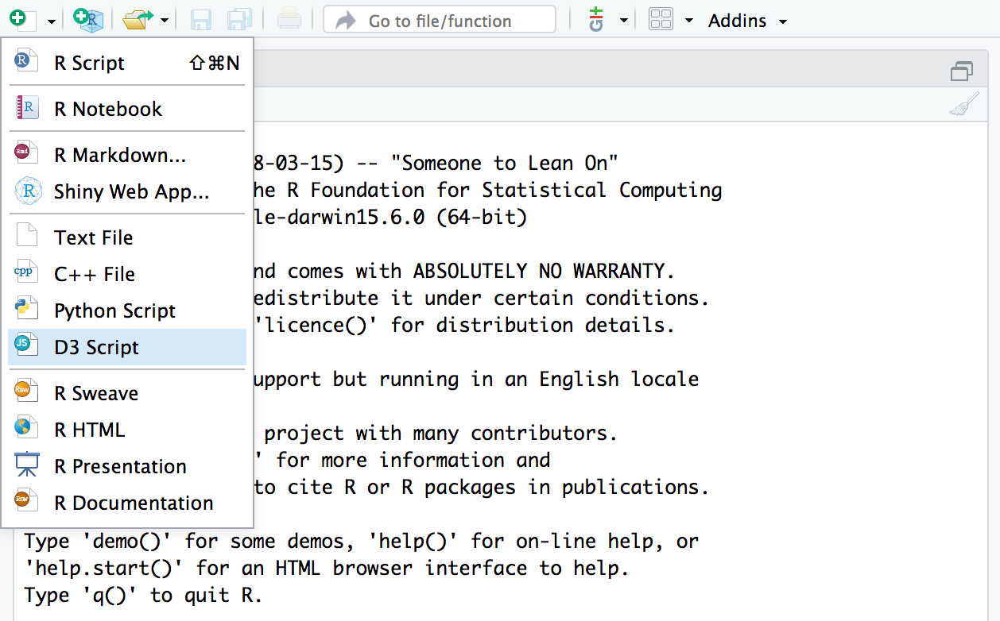
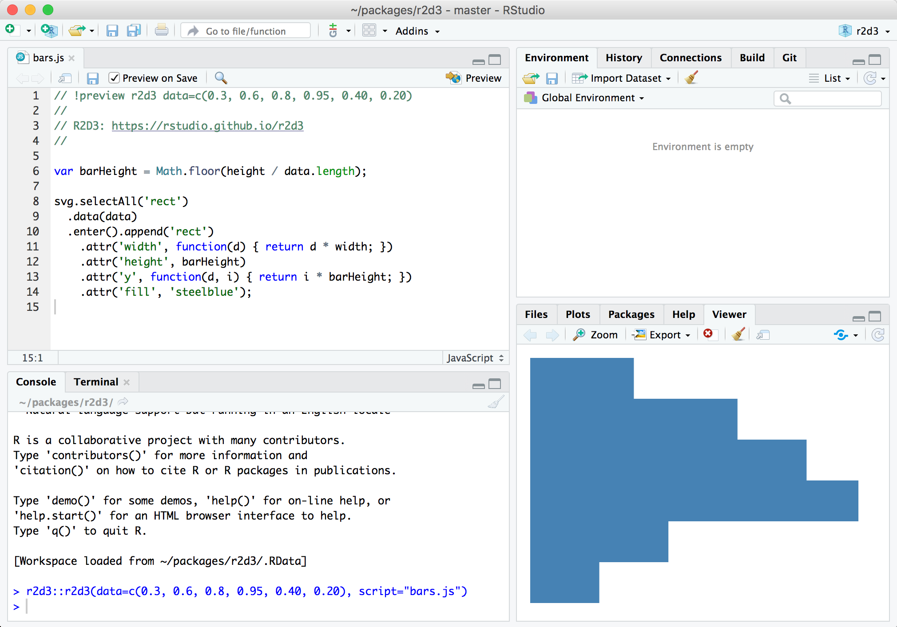

The r2d3 package provides a suite of tools for using D3 visualizations with R, including:
Translating R objects into D3 friendly data structures
Rendering D3 scripts within the RStudio Viewer and R Notebooks
Publishing D3 visualizations to the web
Incorporating D3 scripts into R Markdown reports, presentations, and dashboards
Creating interactive D3 applications with Shiny
Distributing D3 based htmlwidgets in R packages
With r2d3, you can bind data from R to D3 visualizations like the ones found on https://github.com/d3/d3/wiki/Gallery, https://bl.ocks.org/, and https://vida.io/explore:
D3 visualizations created with r2d3 work just like R plots within RStudio, R Markdown documents, and Shiny applications.
Getting Started
First, install the package from GitHub as follows:
devtools::install_github("rstudio/r2d3")Next, install the preview release of RStudio v1.2 of RStudio (you need this version of RStudio to take advantage of various integrated tools for authoring D3 scripts with r2d3).
Once you’ve installed the package and the RStudio v1.2 preview release you have the tools required to work with r2d3. Below, we’ll describe basic workflow within RStudio and techniques for including visualizations in R Markdown and Shiny applications.
About D3
Creating data visualizations with r2d3 requires lots of custom SVG graphics programming (similar to creating custom grid graphics in R). It’s therefore a good fit when you need highly custom visualizations that aren’t covered by existing libraries. If on the other hand you are looking for pre-fabricated D3 / JavaScript visualizations, check out the packages created using htmlwidgets, which provide a much higher level interface.
If you are completely new to D3, you may also want to check out the article on Learning D3 before proceeding further.
D3 Scripts
To use r2d3, write a D3 script and then pass R data to it using the r2d3() function. For example, here’s a simple D3 script that draws a bar chart (“barchart.js”):
// !preview r2d3 data=c(0.3, 0.6, 0.8, 0.95, 0.40, 0.20)
var barHeight = Math.floor(height / data.length);
svg
.selectAll("rect")
.data(data)
.enter()
.append("rect")
.attr("width", function (d) {
return d * width;
})
.attr("height", barHeight)
.attr("y", function (d, i) {
return i * barHeight;
})
.attr("fill", "steelblue");To render the script within R you call the r2d3() function:
Which results in the following visualization:
D3 Variables
Note that data is provided to the script using the data argument to the r2d3() function. This data is then automatically made available to the D3 script. There are a number of other special variables available within D3 scripts, including:
-
data- The R data converted to JavaScript. -
svg- The svg container for the visualization -
width- The current width of the container -
height- The current height of the container -
options- Additional options provided by the user -
theme- Colors for the current theme
When you are learning D3 or translating D3 examples for use with R it’s important to keep in mind that D3 examples will generally include code to load data, create an SVG or other root element, and establish a width and height for the visualization.
On the other hand with r2d3, these variables are provided automatically so do not need to be created. The reasons these variables are provided automatically are:
So that you can dynamically bind data from R to visualizations; and
So that r2d3 can automatically handle dynamic resizing for your visualization. Most D3 examples have a static size. This if fine for an example but not very robust for including the visualization within a report, dashboard, or application.
D3 Preview
The RStudio v1.2 preview release of RStudio includes support for previewing D3 scripts as you write them. To try this out, create a D3 script using the new file menu:

A simple template for a D3 script (the barchart.js example shown above) is provided by default. You can use the Preview command (Ctrl+Shift+Enter) to render the visualization:

You might wonder where the data comes from for the preview. Note that there is a special comment at the top of the D3 script:
This comment enables you to specify the data (along with any other arguments to the r2d3() function) to use for the preview.
R Markdown
You can include D3 visualizations in an R Markdown document or R Notebook. You can do this by calling the r2d3() function from within an R code chunk:
---
output: html_document
---
```{r}
library(r2d3)
r2d3(data=c(0.3, 0.6, 0.8, 0.95, 0.40, 0.20), script = "barchart.js")
```You can also include D3 visualization code inline using the d3 R Markdown engine:
```{r setup}
library(r2d3)
bars <- c(10, 20, 30)
``````{d3 data=bars, options=list(color = 'orange')}
svg.selectAll('rect')
.data(data)
.enter()
.append('rect')
.attr('width', function(d) { return d * 10; })
.attr('height', '20px')
.attr('y', function(d, i) { return i * 22; })
.attr('fill', options.color);
```Note that in order to use the d3 engine you need to add library(r2d3) to the setup chunk (as illustrated above).
Shiny
The renderD3() and d3Output() functions enable you to include D3 visualizations within Shiny applications:
library(shiny)
library(r2d3)
ui <- fluidPage(
inputPanel(
sliderInput("bar_max", label = "Max:",
min = 0.1, max = 1.0, value = 0.2, step = 0.1)
),
d3Output("d3")
)
server <- function(input, output) {
output$d3 <- renderD3({
r2d3(
runif(5, 0, input$bar_max),
script = system.file("examples/baranims.js", package = "r2d3")
)
})
}
shinyApp(ui = ui, server = server)
See the article on Using r2d3 with Shiny to learn more (including how to create custom Shiny inputs that respond to user interaction with D3 visualizations).
Learning More
To learn the basics of D3 and see some examples that might inspire your own work, check out:
Learning D3 - Suggested resources for learning how to create D3 visualizations.
Gallery of Examples - Learn from a wide variety of example D3 visualizations.
For next steps on learning on how to use r2d3, see these articles:
-
- Customize the conversion of R objects to D3-friendly JSON.
-
- Control various aspects of D3 rendering and expose user-level options for your D3 script.
-
- Recommended tools and workflow for developing D3 visualizations.
-
- Publish D3 visualizations as HTML, a static PNG image, or within R Markdown documents and Shiny applications.
Once you are familar with the basics, check out these articles on more advanced topics:
Using r2d3 with Shiny - Deriving insights from data is streamlined when users are able to modify a Shiny input, or click on a D3 visualization, and that action produces new results.
-
CSS and JavaScript Dependencies
- Incorporating external CSS styles and JavaScript libraries into your visualizations.
-
Advanced Rendering with Callbacks
- An alternate way to organize D3 scripts that enables you to distinguish between initialization and re-rendering based on new data, as well as handle resizing more dynamically.
Package Development – Create re-usable D3 visualizations by including them in an R package.